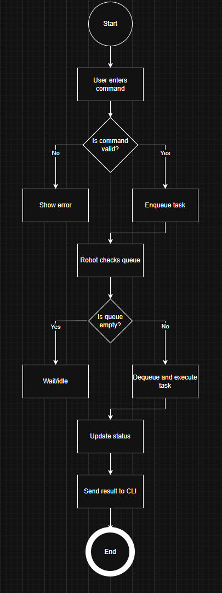
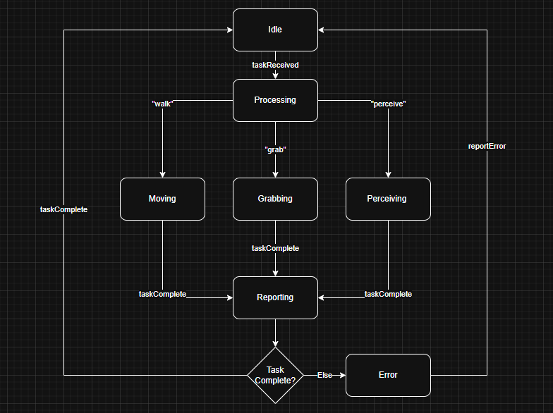

Back to ePortfolio
Advanced Object-Oriented Programing Reflective Piece
Introduction
This e-Portfolio reflects on the learning journey throughout the Advanced Object-Oriented Design and Programming module. The purpose of this portfolio is to demonstrate understanding of advanced OOP principles, secure coding practices and various architectural concepts by linking theory with practical knowledge. The e-Portfolio serves as a way to explain how skills have developed throughout the module, it also outlines a Professional Development Plan (PDP) for continuing growth.
The module, as well as the Object-Oriented Programming module that was completed alongside it, has covered key learning outcomes such as implementing secure coding practices, applying advanced OOP concepts to complex problems, utilising design patterns to improve software maintainability as well as designing software architectures suitable for large-scale systems.
The approach taken throughout the module has been highly practical but with a large focus on learning new skills as well as advancing them to a practical level. The development of multiple artefacts, including the previous coding exercises such as the thread-safe banking system from the week 6 submission and a project focused on a humanoid robot system in the OOP module, are some larger scale projects that have not only been successful but also show how new skills have been implemented. These skills are mainly oriented around designing, implementing, and evaluating software solutions.
This portfolio is divided into five main sections. Firstly a summary of the key learning outcomes and how they were achieved, then a showcase of the artefacts produced during the module, linking them to OOP principles and practical applications. The artefacts will also allow further explanation into the outcomes of the first section. Thirdly a reflection of the academic and employability skills developed, followed by a PDP which identifies strengths, areas for improvement and future goals. Finally, a conclusion will be made summarising how the module has contributed to professional development in regards to advanced OOP practices in the industry.
Key Learning Outcomes
Secure Coding Practices
One of the central objectives of the module was to understand and implement secure coding practices in software development. This was demonstrated through the thread-safe banking system, where the task was to create a banking application capable of handling concurrent transactions by multiple users.
The challenge lay in ensuring operations such as deposits and withdrawals were executed correctly without issues arising from multiple users completing transactions at one time. To achieve this, the use of Python’s “threading.Lock” mechanism allowed for the synchronisation of shared resources (i.e., the account balance).
An important lesson to learn from this exercise is how subtle concurrency issues can compromise data integrity, as well as how secure coding practices must anticipate and mitigate such risks. The implementation of tests further reinforced the importance of validation in secure software design. Simulating multiple concurrent users allowed for the confirmation of the correctness of the solution, proving that secure coding is not just about preventing external threats but also about ensuring internal consistency.
Advanced OOP Principles
A major focus of the module was the importance of applying advanced OOP principles, for example abstraction, encapsulation, inheritance and polymorphism; these principles were essential in order to solve complex problems. This was particularly evident in the humanoid robot project, which required a design and implementation of a system capable of simulating robot behaviour in an environment.
I used encapsulation to separate the robot’s internal state with the way it interacted with the world physically. Inheritance was used when simulating different types of sensors, where subclasses extended a base “Sensor” class. Polymorphism enabled the system to treat all sensor data in its processing, while allowing each subclass to implement its specific behaviour.
UML diagrams including class, sequence, state transition and activity diagrams were used for the system flow and the way in which components interacted. These visual artefacts provided the ability to plan during the design phase and ensured that during the implementation there was clarity on how the system should be structured.
By structuring the code into packages (core, activities, sequences and tests), The system had ensured reusability and maintainability. The ability to extend the system easily highlighted the utility of advanced OOP principles in creating strong solutions.
Design Patterns
Another major learning outcome was understanding and applying design patterns to improve software flexibility and reusability. While some patterns were introduced conceptually, they were properly applied directly in my projects.
In the humanoid robot project, a method that referenced the correct sensor type based on input parameters was used. This reduced excessive code and allowed the system to remain flexible if new sensor types were introduced in the future.
Similarly a simplified “Observer Pattern” was used in that simulation, where different subsystems (such as a logger and monitor) subscribe to updates from the robot. This pattern proved effective in decoupling components as well as allowing for extra components to be added or removed dynamically without affecting the main subject.
Reflecting on these experiences, it becomes evident that design patterns serve as reliable and reusable solutions to problems. They provide a higher level of quality and efficiency that assists putting designs into implementations.
Software Architecture for Large-Scale Systems
Large-scale software design requires a logical perspective, ensuring security, scalability as well as maintainability. Through personal research, I explored concepts such as layered architectures, modular design and secure systems.
Through research on papers as well as on more basic tutorials, it became increasingly apparent how architectural patterns improve resilience. Research also allowed for a reflection on how improper design decisions, such as faulty coupling or lack of abstraction, can increase vulnerabilities.
The humanoid robot project provided an opportunity to apply logical thinking. Although the system was not truly large-scale, designing it with modularity and future expansion in mind mirrored the challenges faced in large-scale projects. By separating modules into sections based on functions or actions (e.g., activities, testing), a system was created that could feasibly grow into a larger application.
This outcome reinforces the idea that architecture and planning for large-scale systems is about anticipating change and then building systems that can evolve.
Adaptability for AI and Data Science
The final learning outcome was to design software solutions adaptable for AI models and efficient for data science tasks. Although this was not the central focus of the module, it introduced important forward-looking considerations.
Through personal research, ideas regarding object-oriented software supporting AI workflows were explored. By ensuring that models can be easily integrated and updated the data can remain consistent even if the algorithms change.
In projects that were completed during the course AI remained a hypothetical but forward looking task, The robot project could be extended for AI integration, for example, if the robot’s decision-making process could be enhanced by utilising a learning model, with the modular OOP design allowing seamless integration. Similarly, the thread-safe banking system could be adapted to include anomaly detection for fraudulent transactions, where AI models analyse patterns for outliers.
These hypotheticals, while not using AI directly, highlight the importance of designing for adaptability. Even if AI applications are not implemented immediately, structuring code with modularity, encapsulation and flexibility prepares systems for future AI integration.
Artefact Showcase
Individual Coding Exercise: Banking System
The first key artefact in this portfolio to examine is the Thread-Safe Banking System, developed as part of the Individual Coding Exercise. The purpose of this task was to design and implement a banking system where multiple simulated users could perform transactions at one time without compromising data integrity or security. This exercise directly aligned with the module’s learning outcomes on secure coding and advanced object-oriented design.
The system was developed in Python using classes to encapsulate account data and ensure modularity. The “BankAccount” class contained attributes for account number and balance, alongside methods for deposits, withdrawals and balance retrieval. To address concurrency issues, the “threading.Lock” mechanism was integrated to synchronise access to shared resources. Each financial operation acquired a lock before modifying the account balance, effectively preventing race conditions. Deadlock prevention was also ensured by designing a lock acquisition order. The below screenshot is the “bankAccount” class, with annotations explaining its function:
The below screenshot is an annotated version of the logger, with the “threading.Lock” mechanism:
A secondary class called “transactionSimulator” was implemented to simulate concurrent transactions using multiple threads. This class executed repeated deposit and withdrawal operations to test the system. The program’s output confirmed that balances remained consistent regardless of transaction order or volume, which validated the system’s thread safety. The next screenshot is the transaction file that allowed for simulation of the transactions:
To verify reliability, unit tests were developed using Python’s “unittest” framework. These tests simulated concurrent use and simulated actual balances. This demonstrated that the program maintained data consistency under concurrent conditions changing, an essential indicator of secure and well-structured code. Below are two examples of the end of the output, showing the variety of final result:
The key challenges of this system included testing race conditions during earlier stages and ensuring that threads terminated cleanly. Through iterative testing and debugging, the making of this system allowed for personal growth, strengthening understandings of synchronisation, thread use as well as data consistency environments with concurrent actions.
Humanoid Robot System
The humanoid robot project served as the most complex artefact in the portfolio so far, integrating advanced object-oriented design, UML modelling and modular implementation. The objective was to design and implement a Python-based system that simulated the operation of a humanoid robot capable of interacting with a simulated environment.
The project began with the creation of detailed UML diagrams, including class, sequence, state transition and activity diagrams, these were used to visualise system interactions and data flow. These diagrams guided the object-oriented design of the structure, ensuring each component served a distinct purpose. The system was divided into multiple packages; core, activities, sequences and tests, each handling a specific set of functions. This modular architecture promoted reusability and simplified debugging. Here is a screenshot of the UML Diagrams used during development, beginning with the activity diagram:
Next, a screenshot of the state transition diagram:
Then, a screenshot of the sequence diagram:

Finally, the class diagram:

At the centre of the design was the “Robot” class, which encapsulated properties such as status, tasks and environmental inputs. It coordinated interactions with various subclasses that represented specific actions, for example walking or picking up objects. Encapsulation protected the robot’s internal state, while inheritance and polymorphism allowed for flexible extension of behaviours without modifying existing code. Below is a screenshot of the file structure:
Implementation of testing routines were used within a “tests” module to validate class relationships and functional accuracy. This included automated checks for sensor data handling, state transitions and sequence execution. The use of assertions helped maintain robustness throughout testing. The below screenshot is the code that allowed assertions to test the system:
The below screenshot is an example output from testing this code using the terminal, note the assertion tests, and then the simulated randomness of the outputs to allow a better variety in test results:

During development, several challenges were encountered and resolved regarding import errors and modular dependencies in Python’s package structure. Through this debugging process, lessons were learned in the importance of proper directory management and the use of relative imports when working with projects using large numbers of modules.
Ultimately, the project demonstrated the process of designing an object-oriented system that was both extensible and maintainable. The inclusion of UML modelling, systematic testing and modular design added quality to the application of advanced OOP principles to a system that one day may need to be designed. The experience also reinforced understandings of software architecture, design patterns and project organisation. These skills are directly applicable to professional software engineering practice.
Case Studies
Throughout the module, various case studies were explored regarding software architecture, security, and AI’s adaptability during development. These case studies provided theoretical grounding and information that assisted in the development process, although not directly, but through influence.
One significant case study (Jamshidifar and Afshar, 2017) examined secure software architecture for large-scale systems, with a focus on layered design and its role in maintaining system robustness. Lessons were learned regarding how separating business logic and data layers improves scalability and simplifies debugging during both the building of the system and later testing. This style of case study assisted in reasoning as to why code modules in the earlier artefacts were structured to reduce interdependency and enhance security boundaries. Similar case studies discuss the efficiency of these in certain environments (Bäumer et al., n.d), which leads to the issue of ensuring that large-scale use of object-oriented systems remains effective regardless of industry.
Another case study explored design patterns and maintainability (Gopal, M.K., 2014). These insights proved valuable in the humanoid robot project, where I later applied the “Factory Pattern” to generate different sensor classes dynamically.
Finally, another case study (Lepp, M. and Kaimre, J. 2025) was related to AI and its use in object-oriented programming, specifically AI’s proficiency and its ability to complete academic object-oriented programming courses. This is a cause for concern regarding the future use of OOP, as it would potentially allow for AI to eventually make programs without fault or error from very simple prompts, therefore bringing into question the validity of a lot of testing regarding the legitimacy of the ownership of code, as students may, in an attempt to make their code as efficient as possible, incidentally make code similar to the advanced AI. This extends into the debate regarding how to test for AI use, as it is still not perfect due to its reliance on examining known irregularities that occur in AI generated coding.
These case studies were useful for enhancing critical thinking and analytical skills, which assisted helping bridge the gap between theory and practice. They also demonstrated how design decisions at the conceptual level contribute to secure scalable and adaptable software systems, qualities which were attempted to exist in the artefacts shown earlier.
Reflection on Skill Development
Critical Thinking and Analysis
Throughout this module my critical thinking and analytical abilities have developed significantly. The process of designing systems required me to analyse requirements and evaluate multiple ideas for implementation before making design decisions. For example, during the development of the thread-safe banking system, I had to assess how concurrency would be best implemented, and explored several mechanisms. After evaluating the trade-offs, I chose to implement “threading.Lock” for simplicity and efficiency, in an attempt to best demonstrate analytical reasoning.
Similarly, in the humanoid robot project, critical thinking was essential when interpreting UML diagrams and determining how class relationships should be structured. The process of designing, testing and debugging deepened my understanding of how OOP concepts translate into code. Learning to approach errors as analytical opportunities was key, each bug or unexpected result revealed a flaw in my understanding of Python’s system, and allowed for much more substantial personal development. This module strengthened my capacity to approach complex problems systematically, evaluate multiple perspectives and justify my technical decisions through logic and evidence.
Problem Solving
The problem-solving aspect of this module was evident in the handling of debugging and troubleshooting. Early in the course, I encountered issues with concurrent operations that led to data inconsistencies in the banking system. Solving these issues required me to visualise how multiple threads interacted with shared data. By applying locking mechanisms and testing extensively, I learned the importance of breaking large challenges into manageable parts.
These experiences serve as a reminder that problem-solving in software development is as much about fixing issues as it is about developing a mindset of persistence and analytical thought. The knowledge that each obstacle contributes to deeper understanding and long-term skill development.
Research and Self Study
Independent research and self-study played a crucial role in my progress throughout the module. I frequently consulted tutorials (the ones at the beginning of the references section, while some are linked on pages such as tuples, it includes the other basic concept tutorials accessible on these websites) to reinforce my understanding and knowledge. For instance, while working on thread safety, I explored various Python libraries to gain a broader understanding of best practices.
Similarly, I researched design patterns to understand their applicability in real-world systems. This self-directed learning allowed me to extend my knowledge and connect theoretical design patterns to my own work.
Time Management
Managing multiple assessments and projects simultaneously required careful planning and prioritisation. I developed a weekly schedule that allocated a certain amount of time for research and documentation. This structure ensured steady progress while maintaining balance across tasks. Also allotting certain amounts of time to certain assignments so that I didn’t fall behind on individual tasks was also essential, for example making sure I had enough time to complete the write ups and reports for my submissions.
Completing the humanoid robot project in tandem with the banking system tested my ability to meet deadlines without compromising quality. Through consistent time management, I learned to set realistic goals and adjust time spent on tasks as needed.
Technical Communication and Literacy
This module also strengthened my technical ability at writing literate code. Writing clear code and inline comments requires precision and accuracy. Also by practicing structured academic writing, such as in this e-Portfolio, my ability to communicate not only what I built, but why I built it in the way that I did was tested. This combination of technical and academic literacy is essential for professional roles in the real world where developers must justify design decisions and contribute effectively.
The process of debugging complex systems tested my patience and resilience. Errors persisted despite multiple attempts to fix the issue, persistence, fortunately, allowed me to identify solutions.
Professional Development
Strengths
I developed numerous strengths throughout the completion of this module, for example, some of the more obvious strengths have been in the field of object-oriented programming, my ability to implement and design systems based in it and gaining a familiarity with OOP principles, such as encapsulation, abstraction and polymorphism. My skills in good, secure coding practices and an understanding of software robustness have also improved significantly. The process of implementing locks and creating “assert” tests have enhanced my awareness of the potential variety in solutions to problems during the implementation phase of an OOP design.
Other strengths are quite generic, but applicable to other branches of computer science, such as developing an analytical and reflective mindset that helps me to evaluate my choices, justify them and learn from mistakes in the process. The other more generic strength would be developing resilience purely because of the challenging process of debugging systems and finding where issues are, and how to fix each one individually.
Areas for Improvement
A key improvement to work upon would be developing my understanding of software architecture in large-scale systems. My projects have been modular but in terms of real-world systems are incredibly limited in scale. There are numerous methods for this, mainly researching and exploring design principles and architecture for high availability applications. I could enhance this further by further expanding knowledge on automation frameworks, even though I have implemented more basic tests, further knowledge on other tools and methodologies such as continuous integration (CI).
Another potential area to improve upon would be my knowledge of data structures and algorithmic skills. While the module has focused on the design principles, efficiency is an essential component of large-scale systems. If I improve my skill to write effective, efficient code it will be valuable in both an academic and professional sense.
Future Goals
Through the completion of my current course, personal research and hopefully through the completion of certificates, I aspire to gain a deep knowledge of computer science, particularly in the fields of software engineering and cyber-security.
To show how I intend to complete this goal, below is a list of tasks I’d like to achieve, and the relative time I imagine they will take to complete:
Completion of course - within 2 years. Completion of certificates - depending on the specific certificate and when I feel ready to complete, but ideally sooner rather than later. Personal research - ongoing, there is always more to read and learn about, it becomes more a list of prioritising what is most important at the time. Improve skills outlined in the previous section - over time.
Conclusion
The Advanced Object-Oriented Design and Programming module has been an invaluable experience in both technical and personal development. It has significantly enhanced my ability to design, implement and evaluate complex systems using advanced object-oriented principles. Through a combination of theoretical learning and reflective analysis, I have gained a deeper understanding of how secure and maintainable systems are built in modern computing environments.
Looking forward, my Professional Development Plan outlines a path for continued learning, building upon the strengths reinforced in this module and addressing areas for improvement. The experience has not only prepared me for future study and professional practice, but has also reinforced the commitment to reflective, secure and responsible software design.
References
The first six references apply to the Humanoid Robot system, where the code wasn’t sourced from these but the websites were helpful for learning new functions and libraries:
w3Schools (2024). Python Tuples. [online] www.w3schools.com. Available at: https://www.w3schools.com/python/python_tuples.asp.
docs.python.org. (n.d.). enum — Support for enumerations — Python 3.10.1 documentation. [online] Available at: https://docs.python.org/3/library/enum.html.
GeeksforGeeks (2020). Python pass Statement. [online] GeeksforGeeks. Available at: https://www.geeksforgeeks.org/python/python-pass-statement/.
Python, R. (2025). Python’s assert: Debug and Test Your Code Like a Pro – Real Python. [online] realpython.com. Available at: https://realpython.com/python-assert-statement/.
Python documentation. (2025). Futures. [online] Available at: https://docs.python.org/3/library/asyncio-future.html.
Python Software Foundation (2019). typing — Support for type hints — Python 3.8.1rc1 documentation. [online] Python.org. Available at: https://docs.python.org/3/library/typing.html.
These sources are now referenced in text:
Jamshidifar, A.A. and Afshar, A. (2017). “Application of Object-Oriented Approach to Large-Scale Systems, a Case Study.” IFAC Proceedings Volumes, [online] 37(11), pp.527–531.
Bäumer, D., Knoll, R., Guido Gryczan and Heinz Züllighoven (n.d.). “Large scale object-oriented software-development in a banking environment.” [online] doi:https://doi.org/10.1007/BFb0053057.
Gopal, M.K. (2014). “Predicting the maintainability of Object Oriented software using design metrics - An evolutionary case study of open source software.” International Review on Computers and Software (IRECOS), [online] 9(6), pp.946–954. Available at: https://www.researchgate.net/publication/270280975_Predicting_the_maintainability_of_Object_Oriented_software_using_design_metrics_-_An_evolutionary_case_study_of_open_source_software.
Lepp, M. and Kaimre, J. (2025). “How Proficient Is Generative AI in an Introductory Object-Oriented Programming Course?” Proceedings of the 17th International Conference on Computer Supported Education, [online] pp.216–227. doi:https://doi.org/10.5220/0013199200003932.